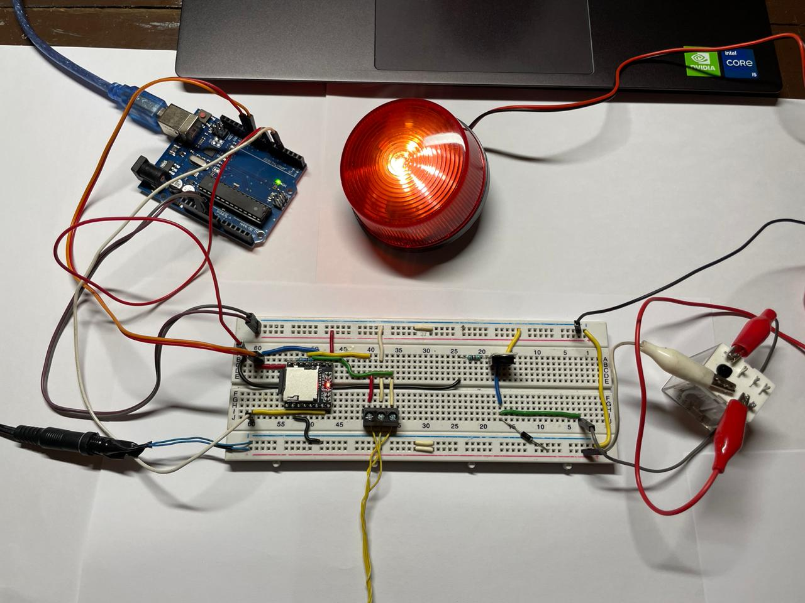

VISIÓN TOTAL, CERO RIESGO
| VISIÓN ARTIFICIAL AL SERVICIO DE LA SEGURIDAD
Protección inteligente mediante IA Local. Optimizamos la seguridad operativa de su industria en tiempo real.
| VISIÓN ARTIFICIAL AL SERVICIO DE LA SEGURIDAD
Protección inteligente mediante IA Local. Optimizamos la seguridad operativa de su industria en tiempo real.
Centinela es un software de visión artificial y salud digital preventiva diseñado para el monitoreo en tiempo real en entornos industriales.
Este prototipo funcional automatiza la supervisión del equipo de protección personal (EPP) para prevenir lesiones y accidentes.
Destaca por su procesamiento local (Edge Computing), garantizando la soberanía y privacidad total de los datos de la planta.

Mediante el aprovechamiento de algoritmos de visión artificial, el sistema permite transitar hacia un monitoreo constante de la salud ocupacional.
El software analiza los flujos de video en tiempo real y detecta de forma automática el uso correcto del EPP.
Ante cualquier omisión, genera alertas audibles y registros digitales inmediatos para una respuesta rápida.

Riesgos laborales anuales reportados que nuestra tecnología ayuda a prevenir.

Pérdida económica promedio por accidente grave que su empresa evita.

Privacidad de datos industriales mediante procesamiento Edge local.
Detección de EPP en milisegundos con redes neuronales optimizadas.
Hardware local dedicado para soberanía de datos y baja latencia.
Reportes automáticos para auditorías de seguridad e higiene.

Prototipo de hardware que integra las alertas audibles y visuales. El circuito procesa las señales de la IA local para activar el estrobo rojo ante infracciones de EPP.

Detección en tiempo real del personal sin casco. La interfaz muestra la precisión del modelo (Without Helmet 0.96) y el registro automático en el dashboard.
Nuestra solución consiste en un programa inteligente de Visión Artificial que permite monitorear el equipo de protección de forma interactiva y automática utilizando cámaras locales.
Software & Integración
Sistema Integral Llave en Mano
Co-Fundador | Especialista en Integración
Co-Fundador | Arquitectura de Sistemas
Co-Fundador | Desarrollo de IA
Co-Fundador | Infraestructura Técnica
Co-Fundadora | Seguridad Industrial